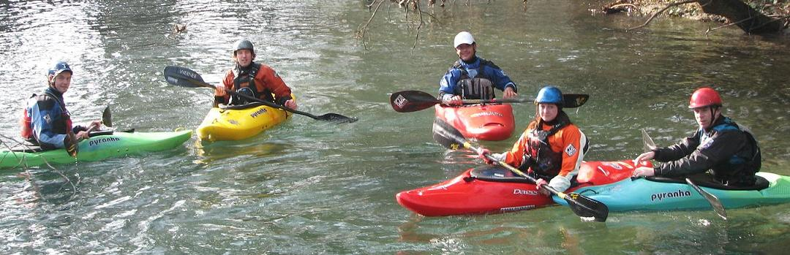
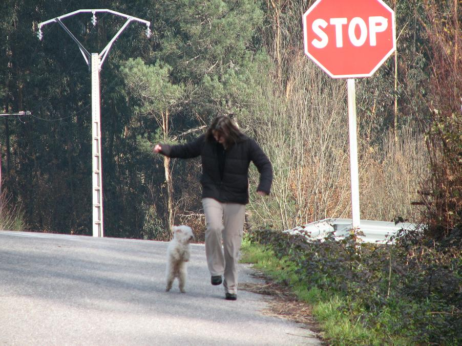
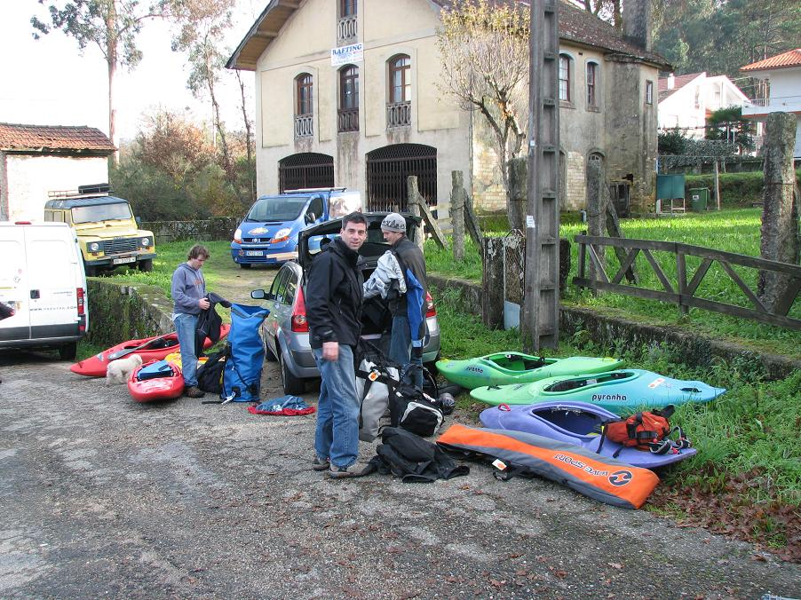
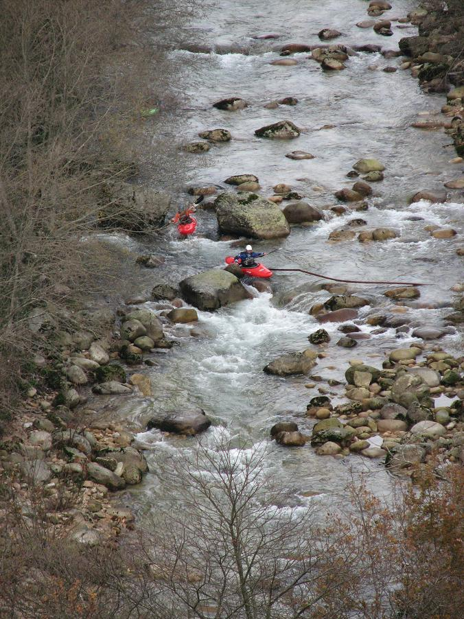
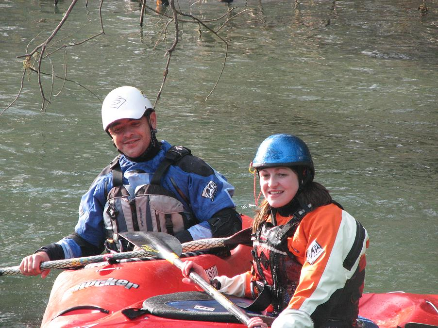
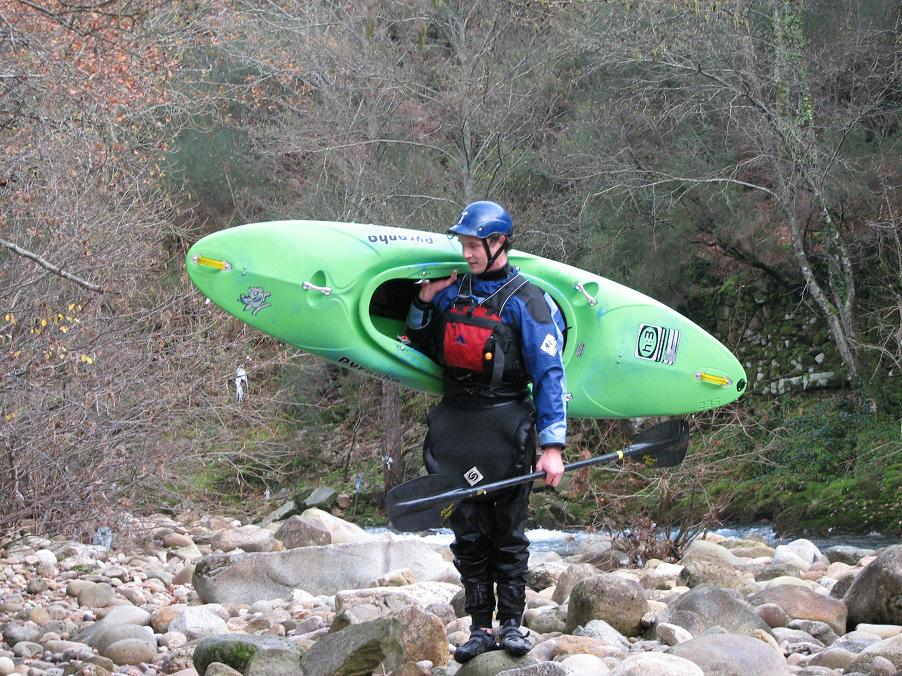

The Team - First Day - Making Contact - Rio Devesa - Rio Vez
‘La indecisión es la llave a la
flexibilidad’
|
|
The Team - First Day - Making Contact - Rio Devesa - Rio Vez |
||
|---|---|---|---|---|
|
‘La indecisión es la llave a la
flexibilidad’ |
The Team
Left to right: Officer Mahoney, Rob J. Coffey, local paddler Jorge, Catherine Halpin, and Mr. Fred. Behind the camera: Jim Kennedy.

The list of paddlers who almost came on this trip, but didn't, is far longer than the one of those that actually did, but in the end it came down to a rogues gallery of Irish regulars of this parish (mananamanana.com) - Officer Mahoney, Mr. Fred, The Real Jim Kennedy, and Catherine Halpin, as well as Rob J. Coffey of the neighbouring parish (liveoncemedia.com). The first three have been paddling together, home and away, for many years; Catherine is a regular on the Irish scene, but and this was her first trip away; and Rob J., sadly, needs no introduction.
The First Day
Originally, our January trip was intended to be to Galicia, the autonomous region of Spain tucked into the top left corner of that country, right above Portugal. We thought that we would arrive in Porto, northern Portugal, and head directly to the frontier with Spain. With barely a word of Portuguese between the five of us but with a smattering of Spanish, Spain would be a better option, we reasoned. We hadn't really decided what to do exactly, and when it didn't work out the way we thought it would, we fell back on our motto:
‘La indecisión es la llave a la flexibilidad’
We overnighted in Melgaco, about three or four hours north east of Porto and just on the Portuguese side of the border. In the morning we phoned our only contact - local kayaker and gearshop guy, Jorge Jorge. That's not a typo, the man's name is 'George George.'
Following phone consultation with a network of paddlers (a cluster in every watershed, it seems) we were pretty much handed a list of options for rivers based on what was running in which parts of northern Portugal. This was quickly becoming one of the most organised trip any of us, with the possible exception of Rob J., had ever been on. It had already spiralled out of our control and we were still in the cafe.
Jorge dropped everything he was doing to bring us boating. This was to become a regular event, either with Jorge or some of the other nodes of the local network. We were about to embark on a tour of hospitality none of us had ever encountered before. The kindness of strangers and all that.
Rio Devesa
Loaded up, we headed to the Devesa just across the mighty Minho (or Mino in Spanish).
Here's Catherine at the put-in playing with Jorge's little dog, Creek.

This trip also marked a return to boating of Mr. Fred, who really hasn't been in a boat since Chile in 2005 (covered elsewhere in these pages). He retires fairly regularly, but always comes back in style. Mr. Fred has two modes of operation - regular and extreme. This is Regular Fred - Extreme Fred comes later.

The Devesa was a low-water run, fairly mellow, like a mid-summer run in Wicklow.
Rio Vez
After that, our only foray into river running in Spain, we recrossed the fronier to Portugal and did another low-volume trip on a section of the Vez (the classic Alto Vez being too low). So far, so simple. Everyone was happy to be started but hoping that the pace would pick up somewhat in the subsequent days.
Seriously low water.

Jorge runs a gear shop in Lisbon and is setting up another one and a guiding business in Melgaco - check out www.pagayak.com for more information.

Ferg standing on a rock, balancing a boat on his shoulder - is there no end to this man's talent?
